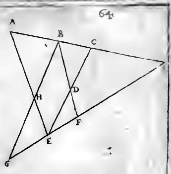
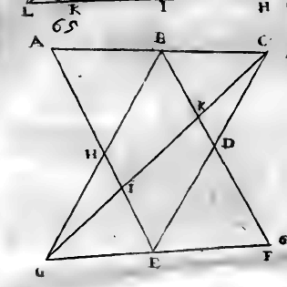
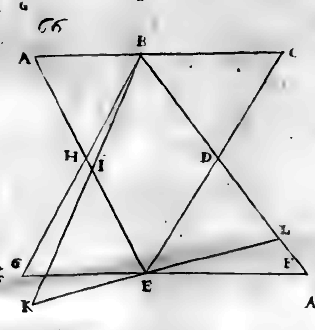

Propositio XIX · Problema III¶







PROP. XIX. PROB. III. (tab. 8. fig. 63, 64, 65, 66, pp. 54–57)
Sint inter se duo sic aptata triangula, vt reciprocè vertex vnius desinat in alterius basim, atque adeò eorum latera se inuicem secent: distinguemus in huiusmodi figura sex rectarum rationes, ex quibus, datis quatuor quibuslibet, sit nobis propositum duas reliquas inuestigare.
Huius problematis sunt quindecim casus; totidem sunt enim numeri binarij combinabiles in senario.
I. Sint notae quatuor rationes GE ad EF; AB ad BC; AH ad HE; & BD ad DF: Sintque indagandae duae reliquae GH ad HB, & FD ad DB. Iungantur duae rectae HD, BE, se inuicem secantes in I. Quoniam in elemento tertio, cuius centrum I, & grauia A; H–A; D–C; C, sunt datae tres rationes AH ad HE; ED ad DC; & AB ad BC; dabimus quoque reliquas duas rationes (ex nono probl. primi huius) HI ad ID, & BI ad IE; quare cum in figura eiusdem elementi, cuius centrum I, grauia verò G; H–G; D–F; F, datae sint tres rationes GE ad EF; HI ad ID, & EI ad IB; manifestabimus (ex eodem probl.) etiam reliquas duas rationes GH ad HB, & FD ad DB.
II. Aperiendae sint duae rationes AH ad HE, & ED ad DC, notis reliquis; erit hic casus similis priori.
III. Rationes, quas debemus patefacere sint duae AB ad BC; GE ad EF, habitis quatuor reliquis (caue tamen in hoc casu ne AC, GF sint parallelae) Producantur AC, GF, quae conuenient in I. Cum igitur AB ad BC componatur ex rationibus AB ad BI, & BI ad BC; item GE ad EF componatur ex rationibus GE ad EI ad EF; & in elemento primo, cuius grauia AIG, & centrum H, datae sint duae rationes GH ad HB, & EH ad HA; & pariter in alia figura eiusdem elementi, cuius grauia BIE, & eorum centrum D, datae sint duae rationes ED ad DC, & FD ad DB; aperiemus in prima figura reliquas duas AB ad BI; GE ad EI; atque in secunda figura duas reliquas BI ad BC; & EI ad EF; datae sunt igitur rationes AB ad BI ad BC, hoc est AB ad BC; itemque rationes GE ad EI ad EF, hoc est GE ad EF, quod erat propositum.
f. 0072 · p. 55IV. Debeamus modò manifestare duas rationes ED ad DC, atque FD ad DB, suppositis reliquis quatuor. Si duae AC, GF, sint parallelae iam patet propositum; si verò non sint producamus illas vt prius, adeout conueniant in I; & quia in elemento primo, cuius grauia AIG, & centrum H, dantur duae rationes AH ad HE, GH ad HB, manifestabimus (ex 6. probl. 1. p.) duas reliquas AB ad BI, & GE ad EI; sunt autem datae rationes AB ad BC, & GE ad EF; ergo ablatis notis rationibus AB ad BI, videlicet AB ad BC, & GE ad EI, à praedicta GE ad EF; erunt reliquae rationes BI ad BC, atque IE ad EF notae: quare his duabus datis rationibus in primo elemento, cuius grauia BIE, & centrum D, palam fient reliquae duae BD ad DF, & DE ad DC, quod erat propositum.
V. Quod si inuestigandae rationes sint AH ad HE, & BH ad HG, consimili ferè ratiocinio absoluemus problema; datis enim duabus BD ad DF, ED ad DC in elemento primo, cuius grauia BIE, & centrum D, fiunt notae duae reliquae BC ad BI, & EF ad EI; cumque supponantur datae etiam CB ad BA, & FE ad EG, dabuntur etiam duae reliquae IB ab [ad] BA, IE ad EG. Itaque quoniam in primo elemento, cuius grauia AIC [AIG], centrumque H, notae sunt duae rationes IB ad BA, & IE ad EG, reliquas item duas manifestabimus AH ad HE, & GH ad HB.
VI. Sint aperiendae duae rationes AH ad HE, & GE ad EF, habitis reliquis. Si AC, GF fuerint parallelae, constat AH ad HE esse in eadem ratione, in qua BH ad HG, & ideo datam esse. Deinde quia GE ad EF componitur ex rationibus GE ad AB, AB ad BC, & BC ad EF; vt autem GE ad AB, ita data GH ad HB; AB verò ad BC est data, & vt BC ad EF, ita data CD ad DE; ergo etiam EF ad EG, quae componitur ex datis rationibus, erit data.
Quod si AC, GF parallelae non sint, conueniant productae in I; & quia in elemento primo, cuius grauia BIE, & centrum D, sunt datae duae rationes BD ad DF, & ED ad DC; reliquas quoque CB ad BI, & EI ad FE notas reddemus; & ideo cum ratio nota CB ad BA componatur ex rationibus CB ad BI, quae nota est, & IB ad BA; haec etiam data erit; ideoque cum in elemento primo, cuius grauia AIG, & centrum H, datae sint duae rationes IB ad BA, & BH ad HG, reliquas etiam AH ad HE, & GE ad EI notas exhibebimus: quare cum GE ad EF componatur ex datis rationibus GE ad EI ad EF; erit quoque ipsa manifesta.
f. 0073 · p. 56VII. Duas rationes GH ad HB, & AB ad BC manifestabimus eodem modo; nam casus est similis antecedenti.
VIII. Sint agnoscendae rationes GE ad EF, & GH ad HB, habitis reliquis quatuor. Datis duabus rationibus ED ad DC, & FD ad DB elucescunt BI ad BC, & EI ad EF; composita verò ex rationibus AB ad BI ad BC, est AB ad BC, quae est data; ergo reliqua AB ad BI data erit, atque adeò in elemento primo, cuius grauia AIG, & centrum H, cum datae sint duae rationes AH ad HE, & AB ad BI; duas item reliquas dabimus GH ad HB, & GE ad EI; componitur autem ratio GE ad EF ex rationibus GE ad EI, & EI ad IF [EF], quae datae sunt, ergo etiam illa elucebit. Quod si parallelae sint AC, GF, eodem ratiocinio vtemur, quo vsi sumus in sexto casu.
IX. Quod si inuestigandae rationes sint AH ad HE, & AB ad BC, erit hic casus similis priori.
X. Sint duae rationes indagandae GE ad EF, & ED ad DC, reliquis praecognitis. Si AC, GF sint parallelae, propositum ostendemus, vt in casu sexto; at si parallelae non fuerint GE, EF [AC, GF], productae conuenient in I; quare cum duae rationes sint datae GH ad HB, AH ad HE, etiam reliquas duas cognoscemus, nempe AB ad BI, & GE ad EI; componitur verò ratio data AB ad BC ex rationibus AB ad BI data, & BI ad BC; ergo & ista, quae reliqua est elucebit; propterea datis duabus rationibus BI ad BC, & BD ad DF in figura primi elementi, cuius grauia BIE, & centrum D, manifestabimus quoque duas reliquas ED ad DC, & EI ad EF; quamobrem sunt datae duae rationes GE ad EI, & EI ad EF; sed ex his componitur ratio GE ad EF; ergo etiam ipsa non latebit.
XI. At si rationes, quas manifestare debemus fuerint AB ad BC, & BD ad DF, hanc partem problematis superiori dicto modo monstrabimus.
XII. Oporteat modò indagare duas rationes AB ad BC, & CD ad DE; & siquidem AC, GF parallelae sint eadem vtemur ratione, qua in sexto casu vsi sumus; si verò non sint, conueniant productae CA, FG in I. Datis duabus rationibus GH ad HB, AH ad HE, dabimus reliquas duas AB ad BI, & GE ad EI; & datis duabus GE ad EF, GE ad EI, notificabimus reliquam EI ad EF; quare habitis duabus EI ad EF, & BD ad DF, cognoscemus item
f. 0074 · p. 57duas CD ad DE, & BI ad BC; habitisque duabus AB ad BI ad BC, ex quibus fit ratio AB ad BC, haec similiter dabitur.
XIII. Quod si notificandae sint duae rationes GE ad EF, & FD ad DB erit hic casus similis priori.
XIV. Si velimus indagare duas rationes AH ad HE, & BD ad DF praecognitis reliquis, iungatur GC secans duas HE, BD in IK. Itaque quia in figura primi elementi, cuius grauia ACG, & centrum H manifestae sunt duae rationes AB ad BC, & G [GH] ad HB; erunt notae reliquae duae AH ad AI, & IC ad CG; pariterque cum in alia figura primi elementi, cuius grauia CGF, eorumque centrum D habitae sint duae rationes ED ad DC, & GE ad EF, fient conspicuae etiam duae reliquae DF ad DK, & GC ad CK; quare IC ad KC (composita videlicet ex duabus IC ad CG ad CK datis) cognoscetur; ideoque in elemento tertio, cuius grauia A; B–A; D–E; E, & centrum K, datis tribus rationibus AB ad BC, IC ad KC, & ED ad DC, dabuntur etiam duae reliquae AI ad AE, & DK ad DB, modò tamen AE, BD parallelae non sint; idcircò datae sunt rationes AH ad AI ad AE, & DF ad DK ad DB, hoc est duae rationes AH ad AE, & DF ad DB: at si aequidistantes fuerint BD, AE, minimè verò AC, GF, problema erit impossibile; quod, vt constet ducamus à puncto E lineam EL, quae secet DF in L, & producta per E, secetur à recta EK, adeò vt LE ad EK sit vt FE ad EG, & iungatur BK secans AE in I. Erit igitur propter parallelas BF, AE, vt BH ad HG, ita BI ad IK; & vt FE ad EG, ita LE ad EK; rationes verò AB ad BC, & CD ad DE sunt ipsae suppositae; ergo si casus possibilis esset, deberet ratio AH ad HE esse eadem ac AI ad IE; item vt BD ad DF, ita oporteret esse BD ad DL, quod cum non sit, nihil certi potest determinari.
XV. & vltimo. Si rationes manifestandae sint BH ad HG, & CD ad DE; cauendum est vt supra ne sint aequidistantes BG, CE quando duae AC, GF non sunt parallelae inter se; est autem hic casus similis superiori, itaque constat totum propositum.